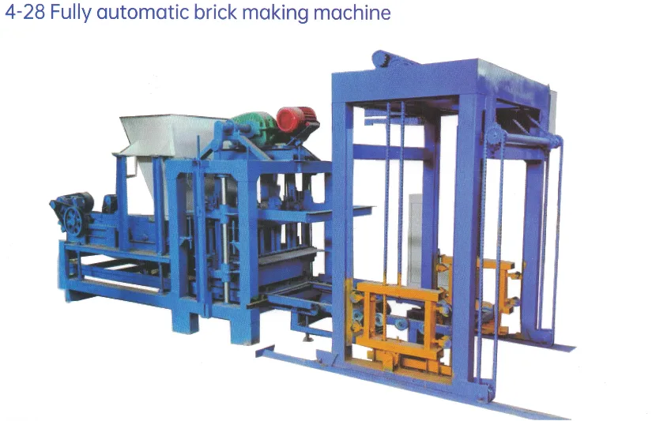
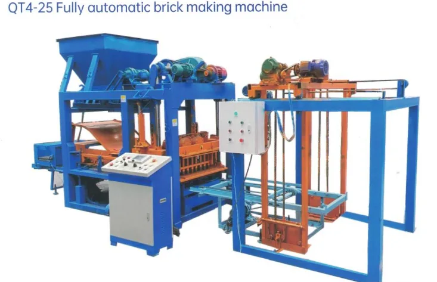

 QT4-28 日产能3000–4500 块/8小时 动力12 kW / 380 V 砖型所有空心砖，可定制模具 设备尺寸4200×1500×1800 mm 机重1800 kg 托板尺寸880×560mm 查看更多图片 查看试机视频 EXW $6200 加入询盘
 QT4-25 日产能4000-5500 块/8小时 动力23.4 kW / 380 V 砖型所有空心砖，可定制模具 设备尺寸2100×3400×2450 mm 机重3500 kg 托板尺寸880×560mm 查看更多图片 查看试机视频 EXW $8400 加入询盘